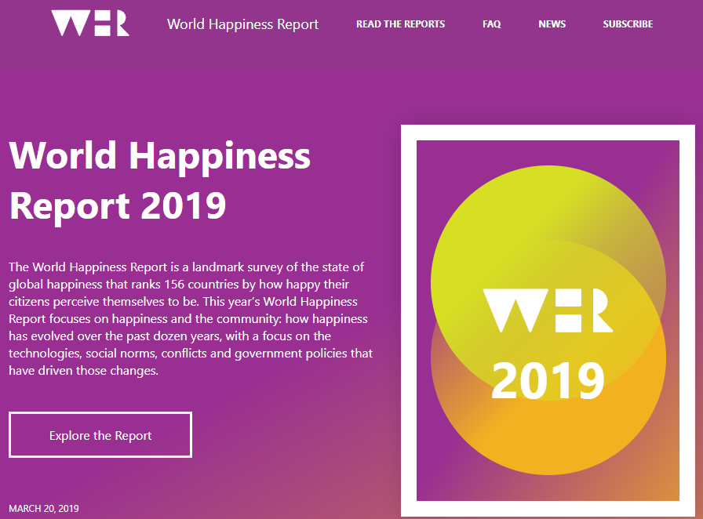
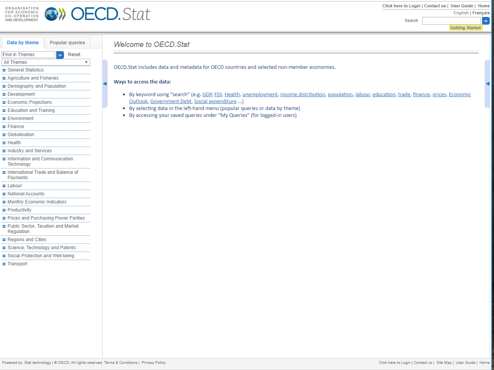
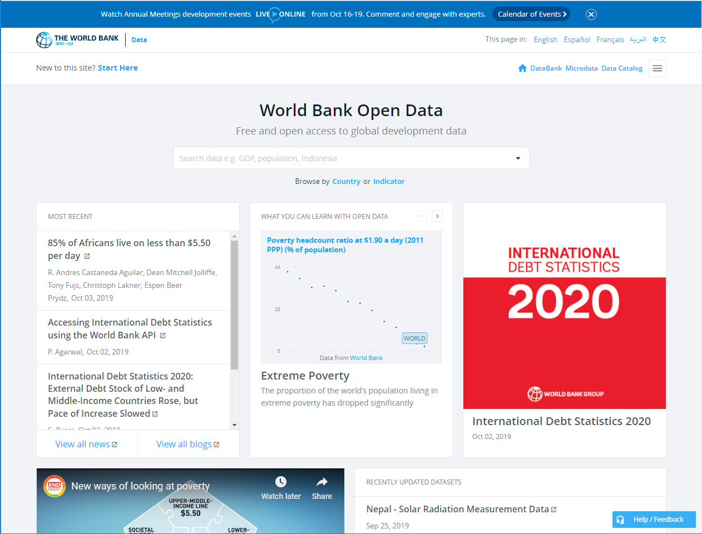
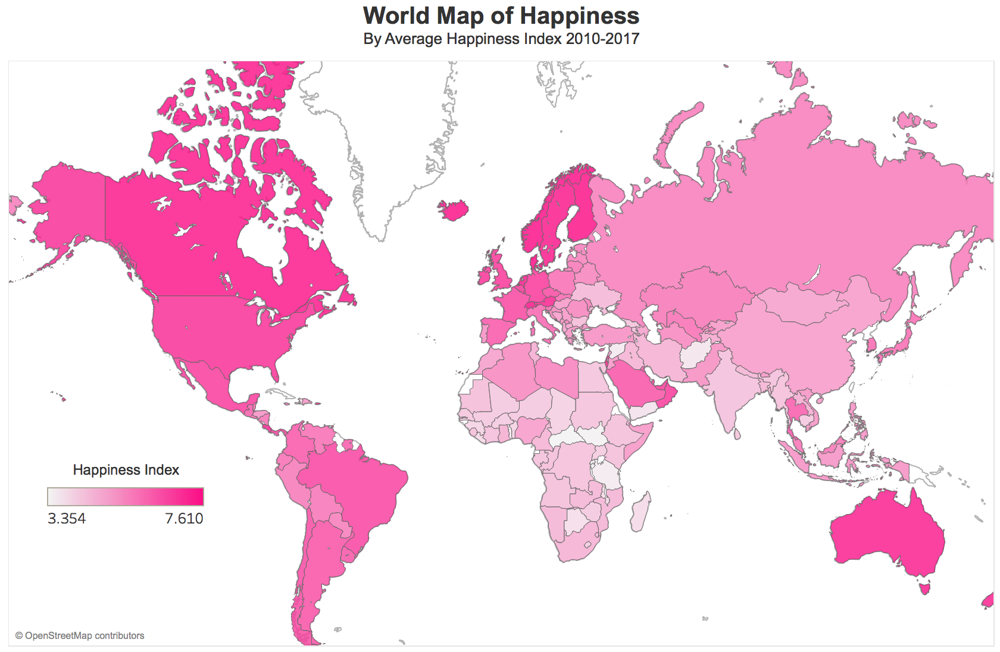
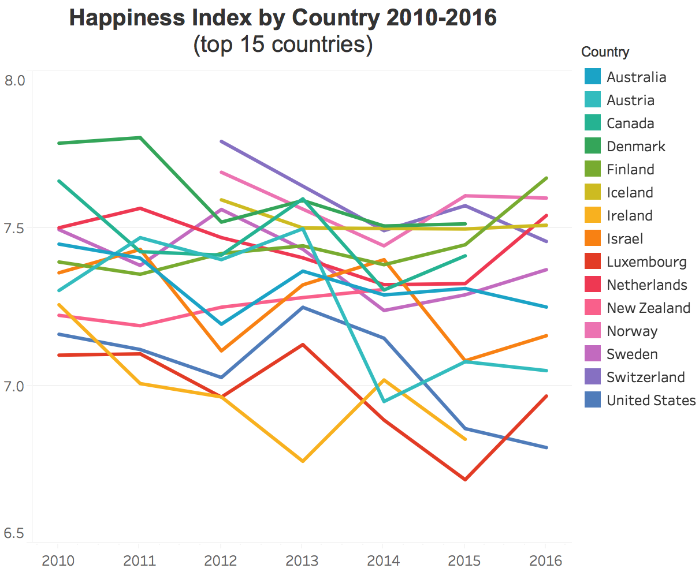

Machine Learning
Exploring the Data
Data Sources

World Happiness Report
"The World Happiness Report is a landmark survey of the state of global happiness that ranks 156 countries by how happy their citizens perceive themselves to be." - World Happiness Report

OECD Statistics
The Organization for Economic Cooperation and Development (OECD) is a compilation of 34 demmocracies with market economics and 70 non-member economices that has provided data to promote economic growth, prosperity, and sustainable development.

The World Bank (WDI)
The World Development Indicators is a compilation of internationally comparable statistics regarding global development. 1,600 data indicators that go back 50 years for 217 economies & more than 40 country groups.
Features Aggregated From Data Sources
| Confidence in National Government | Democratic Quality |
| Governance Delivery Quality | Freedom to Make Life Choices |
| Generosity | Healthy Life Expectancy at Birth |
| Happiness Index | Log GDP Per Capita |
| Negative Affect | Perceptions of Corruption |
| Positive Affect | Social Support |
| STD of Ladder by Country | GINI of Household Income |
| Average Wages | Average Hours Worked |
| Population density | Probability of dying at age 5-14 years |
Preliminary Visualizations
The following charts were developed using Tableau
Happiness Choropleth Map

Happiness Distribution

Annual Happiness Levels
